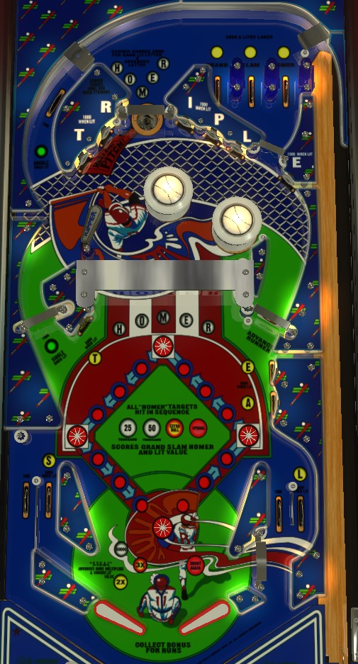

This is a solid state game not to be confused with the electromechanical Grand Slam (Gottlieb, 1972).
Complete the Homer hanging targets in order to score a Grand Slam worth 4 baseball runs as well as an increasing score of up to 50,000 points. If you can use the upper flipper to get back to the top lanes mid-ball, do that to earn more baseball runs as well. Completing the Steal lanes and targets in the lower half of the playfield awards 2x bonus, then 3x bonus, then 50,000 per completion. Very few things give meaningful points other than these progressions and the Runs end of ball bonus.
The four star rollovers in the center of the playfield represent the four bases on a baseball diamond. Whether lit or not, star rollovers always score 1,000 points when triggered. Advancing a runner anticlockwise to 1st base on the right, then 2nd base at the top, then 3rd base on the left, then Home base at the bottom scores 1 run. Each run scores 5,000 or 10,000 points times bonus multiplier as end of ball bonus (operator adjustable). The following baseball terms are used throughout the game and this guide:
Up to 99 runs can be scored by a player in a game. Crossing the "Runs to Beat" threshold shown on the backglass awards an instant Special. Game settings determine whether the Runs to Beat stays constant throughout a game, meaning it can only be earned once, or whether it increases by 10 runs after being passed, allowing multiple Specials to be collected in this way.
Top lanes always score 3,000 points. Roll through an unlit lane to light it. Lane change is available with the right flipper only, allowing the player to rotate which lane(s) are lit. Lighting all 3 lanes to complete the phrase Grand Slam Homer scores a Grand Slam.
The top saucer starts with the H lit. Entering the top saucer scores 2,000 points for each lit letter, then lights the next letter in the word Homer. The 5th top saucer entry, when all letters are flashing, scores 10,000 points and a Homer and restarts the sequence.
The Single and Double lanes always score 1,000 points; they only score a Single or Double when lit. The Single lane is in the middle left and can be shot from the lower right flipper, and the Double lane is in the upper left and is shot from the upper left flipper. Game settings determine whether the Single and Double are always on, or whether they alternate so that you have to collect one to light the other. If they are set to alternating mode, the Single is always the one that is lit at the start of each ball.
Six standup targets just above the bumpers spell Triple. One target is flashing, and worth 1,000 points; the others score 100 points. Hit the flashing target to cause the next letter in Triple to flash. Hitting the E target when flashing scores the Triple and resets the sequence. This is not worth going for at all.
Shoot a swinging target to make it flip up, where it should stay flipped up until the end of the ball or until all 5 swinging targets have been hit. The Homer lights on the playfield near these targets also indicate which swinging targets need to be hit. If the Homer lights are flashing, that means you are still on track to complete Homer in sequence, and the targets score 3,000 points each. If the Homer lights are solidly lit, that means you have failed to collect the Homer letters in order, and the targets score 1,000 points each. Completing the swinging targets out of order scores a Homer. Completing the swinging targets in order scores a Grand Slam as well as scoring and advancing the lit value in the center of the base paths: 5,000 (with nothing lit) - 25,000 - 50,000 - extra ball - Special. Game settings determine whether the Special and the extra ball can be collected multiple times in the same game. In competition/novelty play, extra balls score 25,000 points and Specials score 50,000. Completing the swinging targets in order is pretty much the only somewhat consistent and safe way to earn more than 3,000 points at a time on Grand Slam.
Always scores 100 points per spin. Every 12th spin of the spinner advances the farthest base runner by one base; however, if the spinner remains still for about 1.5 seconds, the 12-count resets. Progress on the 12-count is indicated by the red lights between each star rollover base on the playfield: each red light corresponds to 3 spinner revolutions' worth of progress.
The letters S and L in the word Steal are on the two in lanes, while the T-E-A letters are standup targets in the lower half of the playfield. For these letters, hit a lit lane or target to unlight it. Lit lanes and targets score 5,000 points, while unlit lanes and targets score only 500. Spelling Steal awards 2x bonus the first time, 3x bonus the second time, and 50,000 points on every completion starting with the 3rd. The S and L may be tied together so that you only need to collect one of the two in lanes to earn credit for both letters.
The out lanes always score 1,000 points. In lanes always score 5,000 points when lit, or 500 when not lit, and making a lit in lane unlights it. The left side of the table bottom has the lanes and slingshot in conventional layout, while on the right, the in lane and out lane are reversed, with the in lane being closer to the edge of the table and crossing over the out lane on its way to the flippers. Be aware of the possibility of nudging an out lane ball back to the flippers at the crossover point, or of an in lane ball choking up at the crossover and falling into the out hole.
Bonus is calculated as either 5,000 or 10,000 points times the number of runs scored in the game so far, times the bonus multiplier. Game settings determine whether runs score 5,000 or 10,000 points each. In context, 5,000 points per run is already a lot; 10,000 per run is very overpowered from a strategy perspective. Number of runs can count up to 99 and is remembered for each player from ball to ball. Bonus can be advanced as high as 3x by completing the Steal targets twice. In theory, the maximum bonus is 3x 99x 10,000 = 2,997,000 points, which is impressive for a game that only has 6 digits on each player's score display, but in practice, it's very difficult to score more than 25-30 runs, and equally as difficult to collect bonus multipliers. There is no mid-ball bonus collect.
In competition/novelty play, Specials score 50,000 points and extra balls score 25,000 points. There are also settings that determine whether players are limited to 1 extra ball and 1 Special per game, or an unlimited number of each.
The swinging targets may start with 25,000 lit (by default they do not, and the first completion of Homer in order scores only 5,000 points), and the current swinging target value can be remembered from ball to ball. In-order completions of the Homer swinging targets after Special has been scored will rotate between 50,000 points, extra ball, and Special, omitting extra ball and/or Special if they are set to be limited at 1 per game.
The Runs to Beat threshold for winning an instant Special can be set to any multiple of 5 between 20 and 55 inclusive. On easy settings, passing the Runs to Beat threshold will increase the threshold by 10 runs (or by 20 if the threshold is already 50 or higher), allowing the Special to be collected multiple times. On hard settings, there is a limit of one Special per game for passing the Runs to Beat threshold.
S and L letters in the Steal progression can be tied together, so that going through one lit in lane gives credit for both letters.
Each run can be set to have a value of 5,000 or 10,000 points toward the base end of ball bonus.